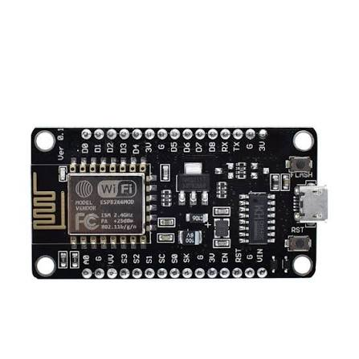

Mạch phát triển ESP8266 NodeMCU Lolin V3 dựa trên chip SoC Wi-Fi ESP8266 mạnh mẽ. Đây là giải pháp hoàn hảo, tiết kiệm chi phí cực lớn cho các hệ thống nhà thông minh và IoT.
| Chíp xử lý chính | ESP8266MOD (ESP-12F) |
|---|---|
| Bộ chuyển đổi USB-UART | CH340G / CP2102 |
| Bộ nhớ Flash | 4 Mbytes (32 Mbits) |
| Chuẩn kết nối Wifi | 802.11 b/g/n (2.4 GHz) |
| Điện áp hoạt động | 3.3V (Nguồn cấp 5V qua cổng MicroUSB hoặc chân Vin) |
| Số chân GPIO | 10 chân GPIO, 1 chân ADC (10-bit) |
ESP8266 NodeMCU Lolin là mạch phát triển IoT hoàn chỉnh, tích hợp đầy đủ nhân SoC Wifi, ăng-ten PCB hiệu suất tốt cùng mạch chuyển đổi tín hiệu USB sang TTL. Người dùng chỉ cần kết nối mạch trực tiếp với máy tính thông qua cáp MicroUSB là đã có thể lập trình dễ dàng.
Mạch hỗ trợ hoàn hảo lõi Arduino core cho ESP8266, giúp bạn sử dụng toàn bộ tập lệnh quen thuộc của Arduino IDE để lập trình kết nối mạng, gửi nhận dữ liệu HTTP Request, MQTT, làm Web Server điều khiển thiết bị qua điện thoại thông minh cực kì nhanh gọn.